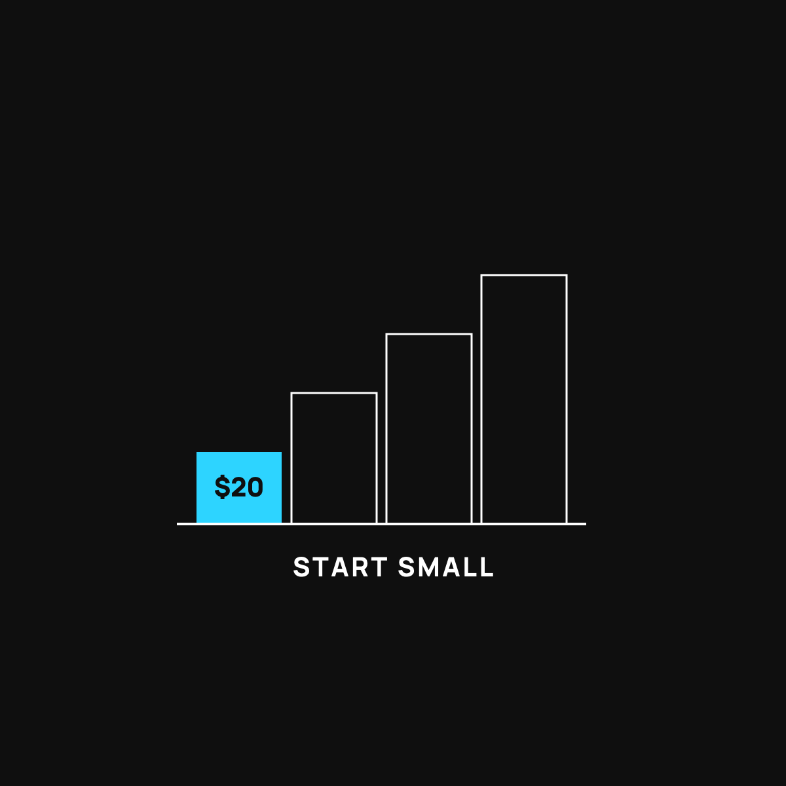

Your First $20 in Bitcoin, Step by Step
You don't need to understand everything or spend a lot. Twenty dollars to learn by doing.
You can try bitcoin with $20 and no expertise. Pick a large, well-known app based in your country, use only money you'd be fine losing, buy your $20, then walk away and don't watch the price. The lesson is the point. The twenty bucks is just the tuition.

You don't need to understand everything about bitcoin to try it. And you definitely don't need a pile of money. You can start with twenty dollars, just to learn by doing. Here's how, in plain steps.
Dip a toe first
Nobody learns to swim by reading about water. At some point you dip a toe in the lake, then a foot, and your body figures out what the book never could.
Money's the same. Twenty dollars in bitcoin isn't about getting rich. It's a toe in the water so the whole thing stops being scary and abstract. Once you've actually done it, you'll understand more in an afternoon than a month of articles could teach you. So let's keep this small and simple.
Step 1: Pick a well-known, boring app
You want the financial equivalent of a well-lit store on Main Street, not a stranger in a parking lot. Look for an app or company that is large, established, based in your country, and easy to find real reviews for. Boring and popular is exactly what you want here. If you have to squint to figure out who's behind it, close the tab.
Step 2: Only use money you'd be fine losing
This is the rule that keeps you safe, so read it twice. The twenty dollars should be money that, if it vanished tomorrow, would not change your week at all. Not rent money. Not gas money. Play money, for learning. Bitcoin's price jumps around a lot, so going in with "I can lose this" removes all the stress.
Step 3: Buy your $20, then walk away
Once your account is set up, buying is usually just a couple of taps. Put in your twenty dollars, buy, done. You now own a tiny sliver of bitcoin.
Then here's the important part. Walk away. Don't check the price every hour. The whole point was to learn how it works and get comfortable, not to ride an emotional rollercoaster over twenty bucks. Let it sit.
Step 4: Notice what you learned
With that one small step, you now understand things most people never touch. How buying works. How the price moves. How it feels to hold a little. That knowledge is the real thing you bought. The twenty dollars was just the tuition.
The honest part
A fair warning, because this brand doesn't sell the shiny half and hide the rest. The price can swing hard, up and down, and nobody knows what it'll do next. This is a learning experiment with money you can afford to lose, not a get-rich plan and not investment advice. If you're unsure whether bitcoin is even for you, start with the bigger question of saving versus gambling, and why some things hold their value at all.
The takeaway
You learn bitcoin the same way you learn a lake, by dipping a toe, not by reading the whole book first. Pick a boring, trusted app, use twenty dollars you can afford to lose, buy, and then leave it alone. The lesson is the point. The twenty bucks is just how you pay for it.
Questions I get about this
What app should I use to buy bitcoin?
A big, boring, established one, based in your country, that's easy to find real reviews for. The financial equivalent of a well-lit store on Main Street, not a stranger in a parking lot. If you have to squint to figure out who's behind it, close the tab.
Can I buy less than one bitcoin?
Yes. Bitcoin splits into tiny fractions, so $20 buys you a small sliver. You don't need to buy a whole coin, and you never will need to.
What should I do after I buy?
Leave it alone. Don't check the price every hour. Then, when you're ready for more, the calm next step is buying a little on a schedule, which I explain in A Little Each Week Beats Betting It All. As your amount grows, learn about wallets and keys.
Nothing here is financial, medical, tax, or legal advice. I'm just a guy who did the homework, sharing what I learned. You make your own calls.
New here?
Normaltown USA is plain-English money and healthcare help for normal people, written by a regular guy with a family of four. No jargon, no hype. Start here, or read the FAQ.